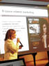
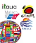
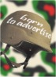
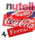

|
|
di Salvatore Floridia -
Una leva di marketing di qualità, che deve essere integrata all'interno
di una strategia di comunicazione in funzione degli obiettivi aziendali,
con la consapevolezza dei suoi processi ideativi e con competenze
specifiche.
|
|
|
di Stefano Merolla -
Il mercato ha generato nuove competenze e una nuova operatività per il
Professional Congress Organizer. Da partner in organizzazione di
convegni a consulente strategico a 360° per la comunicazione integrata
delle aziende. Una risorsa indispensabile per progettare eventi ad alta
visibilità.
|
|
|
di Enrico Ratto -
Il pubblico che guarda solo la televisione non interessa più alle
aziende. Interessa il multimediale "cool" e "iperselettivo".
GfK-Eurisko ha
seguito per un mese 2300 italiani per capire come si comportano
davanti ai media. L'intervista a Giorgio Licastro, manager dell'istituto
di ricerca, con i commenti sul risultato.
|
|
 |
di Lamberto Martinello -
Perseguire gli obiettivi di business contribuendo anche al
raggiungimento di alcune istanze sociali. Se ne è discusso a Roma, in
occasione dell’evento “La responsabilità sociale dell’impresa”
organizzato da Aism e Eccellere.
|
|
|
di Nicolò Occhipinti -
In occasione dell’evento “Il narratore in ascolto" si è discusso di
approccio alla comunicazione interna in stile web 2.0: rafforzamento dei
contribuiti bottom-up, anziché soltanto top-down, per una comunicazione
che incide nei processi organizzativi ed evolve a pratica diffusa di
elaborazione della cultura interna.
|
|
|
di Simone Favaro -
Cresce l'interesse da parte delle organizzazioni per gli eventi,
strumento di comunicazione sempre più orientato a target di nicchia e a
ritorni sull'investimento in tempi più brevi.
|
|
|
di Elisa Scarcella - Il progetto “Impresa &
Sport” permette di realizzare, coerentemente con la propria missione
imprenditoriale, in modo semplice un’attività socialmente responsabile
rivolta alle nuove generazioni. |
|
|
di Francesca Carlet - Una professione in
continua evoluzione, che in Italia attende ancora un riconoscimento
concreto da parte del mondo aziendale. Ai professionisti di
comunicazione spetta quindi il compito di promuovere il proprio ruolo
all’interno delle imprese, preparandosi al meglio e coltivando con
costanza le competenze chiave per crescere nella professione: ecco quali
sono. |
|
 |
di Lara Motta - Dalla terza edizione dello
studio Country Brand Index 2007 condotto da FutureBrand sull’immagine di
oltre quaranta paesi nel mondo, emergono spunti e indicazioni che
evidenziano l’importanza che assume la progettazione di un brand-Paese,
per essere pronti a cogliere le sfide globali che il mercato impone. |
|
|
di Elisa Scarcella - Mirko Nesurini,
esperto e consulente nella creazione, sviluppo e gestione dei brand ed
autore dell'innovativo volume “Good morning Mr.Brand”, dialoga con
Eccellere su psicologia, vita, morte e rigenerazione dei marchi, sul
loro valore, tangibile e intangibile, e sulla loro capacità di
affrontare i nuovi mercati e le nuove sfide. |
|
|
di Nicolò Occhipinti - Un ente pubblico che
fa della comunicazione la leva principale per raggiungere uno dei suoi
obiettivi più importanti: la prevenzione degli infortuni sul lavoro. Un
esempio da imitare che parte dalla comunicazione interna, come ci spiega
Marco Stancati, Direttore Comunicazione di INAIL. |
|
|
di Nicolò Occhipinti - I nuovi
strumenti di comunicazione interna come irrinunciabile leva gestionale,
dalla comunicazione interpersonale al web 2.0 applicato alle aziende. Le
testimonianze dal mondo accademico e aziendale al seminario
“Comunicazione interna e new trend”, organizzato a Roma da Business
International. |
|
 |
di Elisa Scarcella - Esperti di
marketing non-convenzionale hanno esposto principi fondamentali,
strategie ed esempi nel corso del seminario “Il Marketing Guerrilla”
organizzato a Milano da Business International |
|
|
di Anna Maria Pomponi - La nascita di
vere e proprie agorà virtuali hanno determinato la conoscenza della
marca presso il target di riferimento, contribuendo ad instaurare un
rapporto duraturo con gli utenti-consumatori fino a giungere alla loro
fidelizzazione. |
|
|
di Enrico Ratto - Nonostante una governance
famigliare ancora lontana dalle vere public company, la comunicazione
finanziaria in Italia si posiziona su un buon livello, riconosciuto
anche all’estero. Eccellere ne parla con Furio Garbagnati, presidente
Assorel e CEO di Weber Shandwick, azienda leader nelle RP. |
|
|
di Enrico Ratto - Una comunicazione
che integra on line e off line. La prima per battere la concorrenza, la
seconda per convincere il 95% degli italiani che un viaggio può essere
prenotato anche su internet. Eccellere ne parla con Stefano Ponari,
Search and Online Marketing Manager di Expedia.it, il portale dedicato a
viaggi e turismo. |
|
|
di Enrico Ratto
- Eccellere intervista Marzio Bonferroni, Presidente di UniOne, in
occasione dell'uscita del suo nuovo libro "La nuova comunicazione di
marketing". |
|
|
di Elisa Scarcella
- Il sensory branding, efficace ed innovativo strumento di experiental
marketing |
|
|
di Enrico Ratto -
Budget scarso. Alte emozioni. Bisogno di raggiungere il grande pubblico al
minor costo possibile. Sono queste le leve che muovono una forma
“underground” di marketing. Ma a quali aziende può essere utile? |
|
|
di Gianluigi Zarantonello
- Le nuove tecnologie di telecomunicazione aprono scenari di mercato
sfidanti per tutti gli operatori del settore della comunicazione. Nascono
nuovi modelli di consumo di contenuti e servizi. Gli operatori sono adesso
costretti ad individuare nuove tecniche e nuove strategie più adeguate ai
nuovi media rispetto ai tradizionali paradigmi.
|
|
 |
di Rosvanna Lattarulo
- L'evoluzione delle marche italiane sotto la lente del Brand Asset
Valuator, lo strumento di ricerca introdotto dell’agenzia pubblicitaria
Young&Rubicam |
|
|
di Gianluigi Zarantonello - Certe volte le cose più semplici, se
impostate in modo corretto, sono anche le più efficaci.
E' il caso del Buzz Marketing o Viral Marketing, una tecnica che negli
ultimi tempi sta vivendo una buona crescita, soprattutto per quanto riguarda
gli USA. |
|
|
di Enrico Ratto -
Quali sono le nuove strade della comunicazione Business to Business? La
conquista emozionale del proprio target è ancora un obiettivo esclusivo
della comunicazione Consumer?
|
|
|
di
Lara Motta - Quando parliamo in pubblico, saper comunicare
efficacemente è fondamentale. Spesso,
però, si assiste a situazioni in cui la modalità espositiva carente di un
relatore prende il sopravvento sui contenuti, per quanto quest'ultimi
possano essere validi ed interessanti.
|
|
|
di Enrico Ratto -
E’ ancora possibile oggi, per l’impresa editoriale, appoggiarsi
esclusivamente gli introiti pubblicitari? Con lo sviluppo di internet e
dei rapporti stretti tra testata e utente finale, la strada sembra essere
quella della vendita diretta dei contenuti, fondati su caratteristiche
uniche come stile e qualità
|